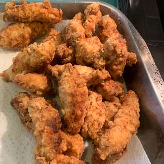

Butter Milk Fried Chicken

How To Prepare Butter Milk Fried Chicken
I love the tangy tenderization that the buttermilk provides.
After the buttermilk soak, dredge the chicken pieces in
seasoned flour, and fry them in hot oil until crisp> and
cooked.
1 (3 1/2) pound chicken, cut into 8 pieces
¼ teaspoon dried rosemary
Steps
Toss together chicken pieces, black pepper, salt, paprika, rosemary, thyme, oregano, sage,
white pepper, and cayenne in a large bowl to coat
Stir in buttermilk until chicken is coated. Refrigerate for 6 hours.
Combine flour, salt, paprika, cayenne, garlic powder, white pepper, and onion powder in a large shallow dish.
Remove chicken from the buttermilk and dredge each piece in the seasoned flour. Shake off any excess and transfer to a plate.